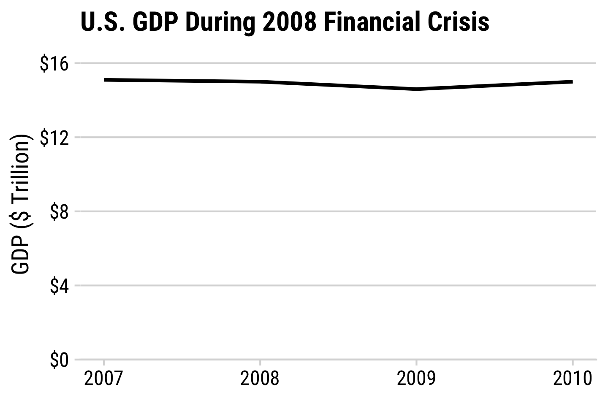
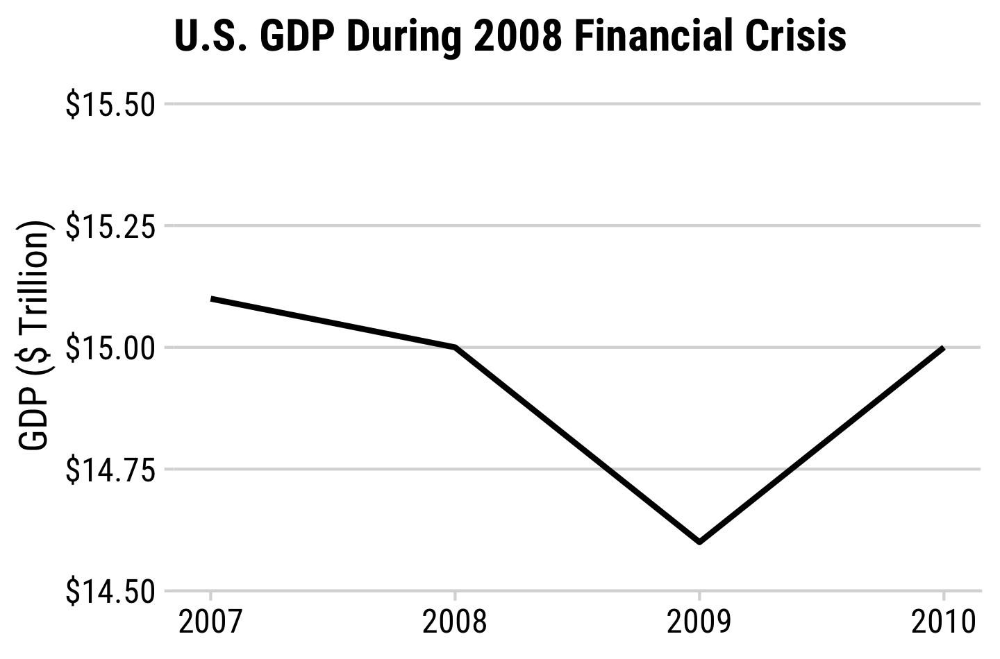
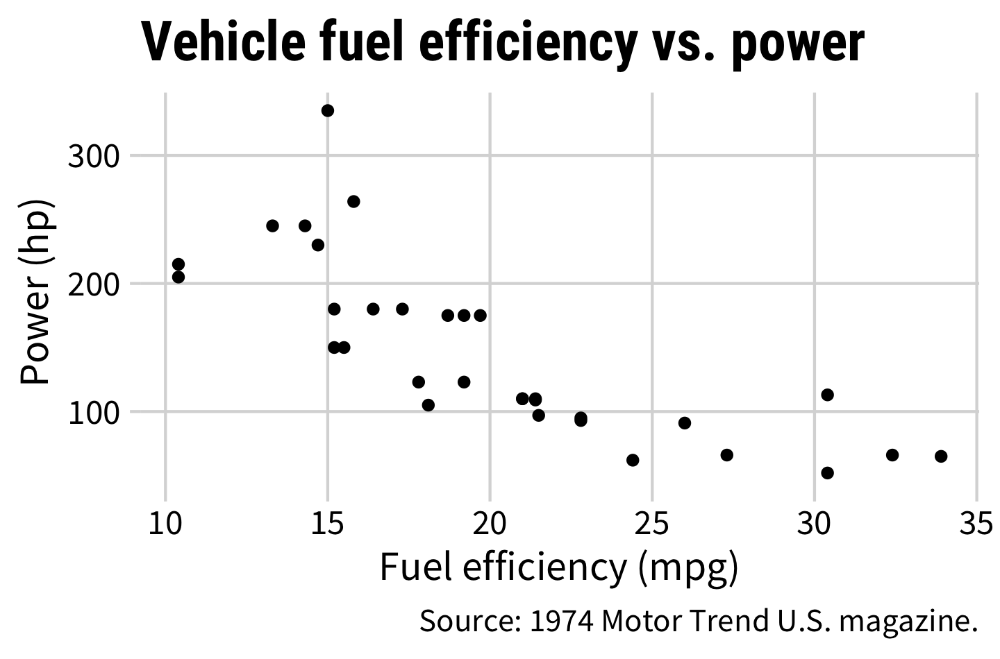
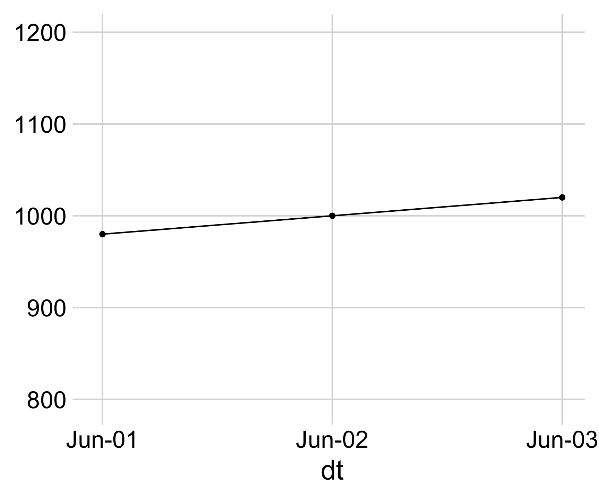
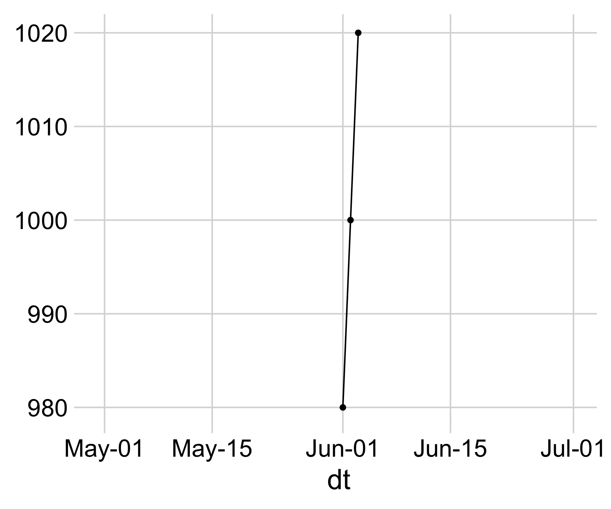
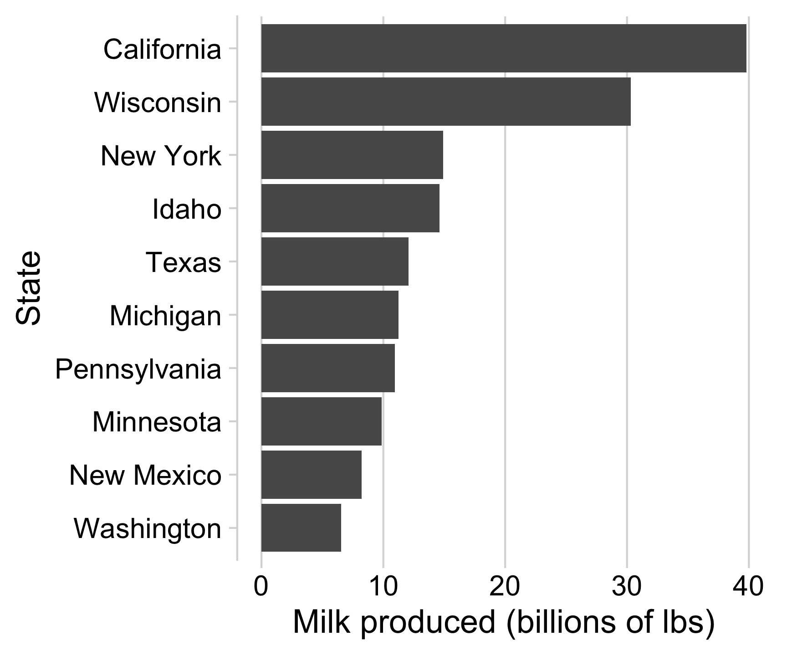
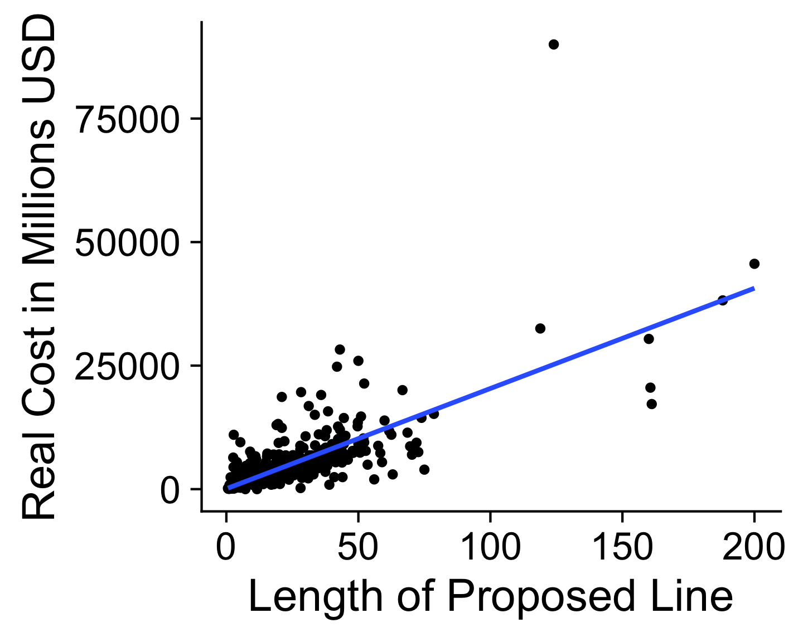
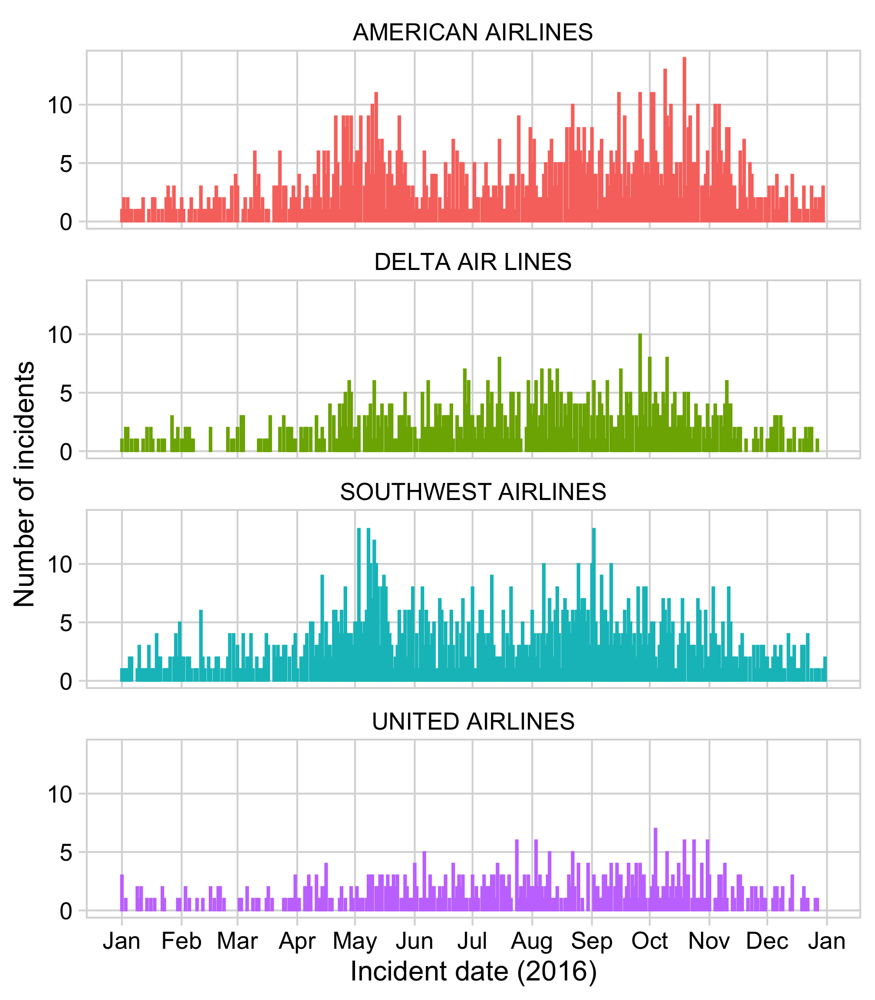

14 Adjusting Scales
14.1 Truncating Axes
14.1.0.1 When is it okay to to truncate an axis?
- When small movements matter

- When zero values are impossible

- When it’s normal / a convention
- Never on a bar chart

14.1.0.2 You are most sensitive to changes in angles close to 45 degrees
Good scaling:
Y scale too large:

X scale too large:

Here is another bad chart:
To make it better…

Set image dimensions in R chunk header:
```{r}
#| fig.width: 5
#| fig.height: 3.1
plot
```14.2 Consider setting dimensions to “Golden Ratio” (1 : 1.618)

Approx. to golden ratio:
| width | height |
|---|---|
| 5 | 3.1 or 3 |
| 6 | 3.7 or 4 |
| 7 | 4.3 |
14.3 Adjusting Scales
14.3.1 Adjust axes with scale_* functions
Continous variables:
scale_x_continuous()
scale_y_continuous()Discrete variables:
scale_x_discrete()
scale_y_discrete()Others:
scale_x_log10()
scale_y_log10()
scale_x_date()Common arguments for continuous variables:
scale_y_continuous(
# Set the lower & upper boundaries
limits = c(lower, upper),
# Explicitly set the break points
breaks = c(break1, break2, etc.)
# Adjust the axis so bars start at 0
expand = expand_scale(mult = c(0, 0.05))
)14.3.2 Adjusting continuous scales
milk_bars <- milk_production %>%
filter(year == 2017) %>%
arrange(desc(milk_produced)) %>%
slice(1:10) %>%
mutate(
milk_produced = milk_produced / 10^9,
state = fct_reorder(state, milk_produced)) %>%
ggplot() +
geom_col(aes(x = milk_produced, y = state)) +
theme_minimal_vgrid(font_size = 18) +
labs(x = 'Milk produced (billions of lbs)',
y = 'State')
milk_bars
milk_bars +
scale_x_continuous(
breaks = c(0, 15, 30, 45),
limits = c(0 , 45),
expand = expand_scale(mult = c(0, 0.05)))14.3.3 Adjusting discrete scales
14.3.4 Adjusting log scales
Regular scaling
plot <- ggplot(msleep) +
geom_point(aes(x = brainwt, y = bodywt)) +
theme_half_open(font_size = 20) +
labs(x = 'Brain weight (kg)',
y = 'Body weight (kg)')
plotLog scaling
plot +
scale_x_log10() +
scale_y_log10() +
labs(x = 'Log brain weight (kg)',
y = 'Log body weight (kg)')Log-log relationship:
\[y = x^n\]
\[\log(y) = n\log(x)\]


Example from Mini Project 2
Regular scaling
plot <- transit_cost %>%
filter(!is.na(length)) %>%
filter(length < 2500) %>%
mutate(cost = as.numeric(real_cost)) %>%
ggplot(aes(x = length, y = cost)) +
geom_point() +
geom_smooth(method = 'lm', se = FALSE) +
theme_half_open(font_size = 20) +
labs(x = "Length of Proposed Line",
y = "Real Cost in Millions USD")
plot
Log scaling
plot +
scale_x_log10() +
scale_y_log10() +
labs(x = 'Log length of proposed line',
y = 'Log cost')
Log-log relationship:
\[y = x^n\]
\[\log(y) = n\log(x)\]

14.4 Date Scales
14.4.0.1 Date scales can be confusing
What’s wrong with this chart?
1st Fix

2nd Fix

Final Fix
14.4.1 Adjusting date scales
Summarise the data
library(lubridate)
plot <- wildlife_impacts %>%
filter(incident_year == 2016) %>%
count(operator, incident_date) %>%
mutate(incident_date = ymd(incident_date)) %>%
ggplot() +
geom_col(
aes(x = incident_date, y = n,
color = operator)) +
facet_wrap(~operator, ncol = 1) +
theme_minimal_grid(font_size = 16) +
panel_border() +
theme(legend.position = 'none') +
labs(x = 'Incident date (2016)',
y = 'Number of incidents')
plotplot +
scale_x_date(
date_breaks = '1 month',
date_labels = '%b')
Let’s explore other variations of the last step:
scale_x_date(
date_breaks = '1 month',
date_labels = '%b')date_breaks = '1 month'- ‘1 day’
- ‘10 days’
- ‘1 month’
- ‘3 months’
- ‘1 year’
- ‘3 years’
date_labels = '%b'Example date: March 04, 2020
%Y= 2020%y= 20%B= March%b= Mar%D= 03/04/2020%d= 03
14.4.2 Use scales library to modify scale text
scales converts numbers to formatted characters
scales::comma(200000)#> [1] "200,000"scales::dollar(200000)#> [1] "$200,000"scales::percent(0.5)#> [1] "50%"Example: scale_x_continuous()
federal_spending %>%
filter(year == 2017) %>%
mutate(
department = fct_reorder(
department, rd_budget_mil)) %>%
ggplot() +
geom_col(aes(x = rd_budget_mil, y = department)) +
scale_x_continuous(
expand = expand_scale(mult = c(0, 0.05))) +
theme_minimal_vgrid(font_size = 16) +
labs(x = 'Department',
y = 'R&D spending ($ Millions)')14.5 Use scales library to modify scale text
Example: scale::comma()
federal_spending %>%
filter(year == 2017) %>%
mutate(
department = fct_reorder(
department, rd_budget_mil)) %>%
ggplot() +
geom_col(aes(x = rd_budget_mil, y = department)) +
scale_x_continuous(
labels = scales::comma,
expand = expand_scale(mult = c(0, 0.05))) +
theme_minimal_vgrid(font_size = 16) +
labs(x = 'Department',
y = 'R&D spending ($ Millions)')Example: scale::dollar()
federal_spending %>%
filter(year == 2017) %>%
mutate(
department = fct_reorder(
department, rd_budget_mil)) %>%
ggplot() +
geom_col(aes(x = rd_budget_mil, y = department)) +
scale_x_continuous(
labels = scales::dollar,
expand = expand_scale(mult = c(0, 0.05))) +
theme_minimal_vgrid(font_size = 16) +
labs(x = 'Department',
y = 'R&D spending ($ Millions)')Check out this guide to scales: https://ggplot2tor.com/scales